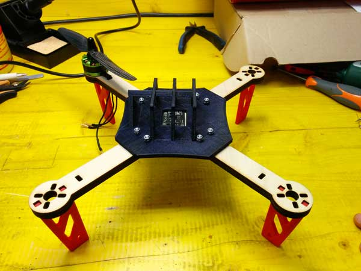
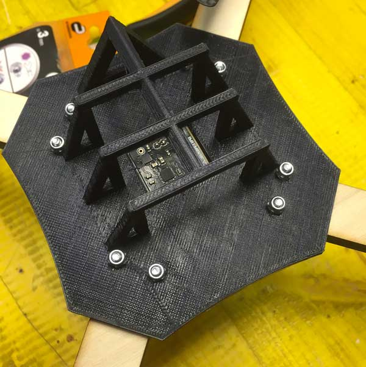
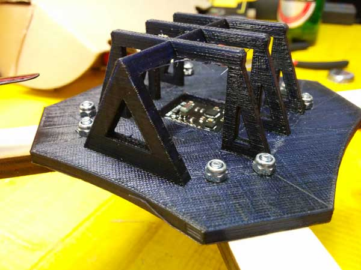

CAD Design: Parts of the drone
The first thing on which we have decided to work with Daniele is the design of the physical parts of the drone. As shown in the Gantt of the project we tried to split, in the most equitable possibilie, the work and the objectives to reach, considering that I started working on the frame while Daniele on support structures.
The Frame
Our first idea for the realization of the main frame structure has been to use plywood of 8 mm thickness, to give much more robustness as possible to the structure. I started from a fairly standard form, with a distance between the opposite propellers of 25 cm, and trying to maintain as much as possible the shapes and dimensions.

In rhino I redesigned the frame preparing two types: a frame designed in one piece and another divided into pieces to try to realize a modular structure. In the middle of the frame i have predisposed a hole for connect the IMU (that stay on the upper side) with the main board below.
I added an additional hole in each arm of the frame to facilitate the connection between the motor and ESC. In the center instead I added 8 holes, 2 per arm, in order to assembly on it additional parts, such as support for the battery.
Once cut the frame with the laser cutter, we realized that the best choice was the frame made from a single piece, as it increases the structural strength of itself.
Next, we tried to assemble on the frame the main parts (engine, IMU and feet designed by Daniele) to check that the joints were accurate and of the right size.
After checking everything is ok and adjusted some dimension of the frame, i have passed to the design a support for the battery that will be applied directly on the frame and secure it with screws.
Battery Compartment
With Daniele we decided to place the battery at the top of the drone, so we have the bottom clear and be able to add them all future components required for improvment we would like to make to the drone.
Always using rhino, I started to draw the battery compartment taking into account the size of the battery that we would like to use: I tried to create a structure as more linear and clean as possible, so as to affect as little as possible on the weight.
I drew a kind of "cage" where will the battery, and left a hole in the center where instead it will be placed the IMU: this structure fact, as well as keep the battery, aims also to keep the IMU as much protected and steady as possible.
Once finished, I exported the model as STL and, once created gcode with Cura I sent in print. For 3d printing I changed the parameters of thickness of the upper and lower layers taking them to 1.2 and fill to 35% to give added strength to the piece.
This is the final result:


